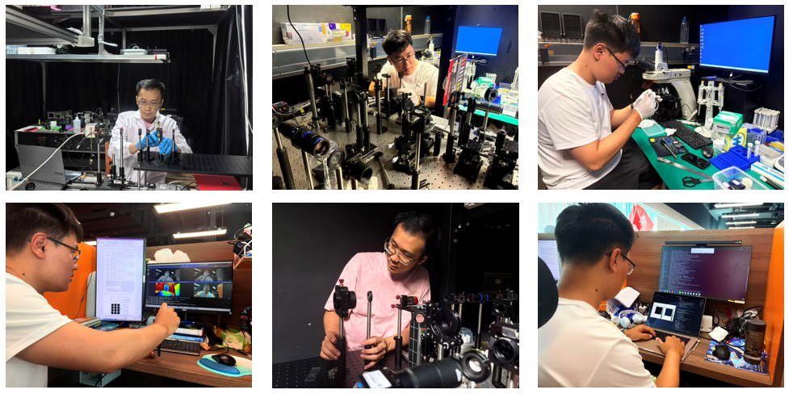
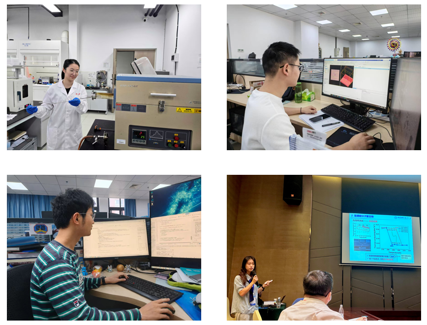
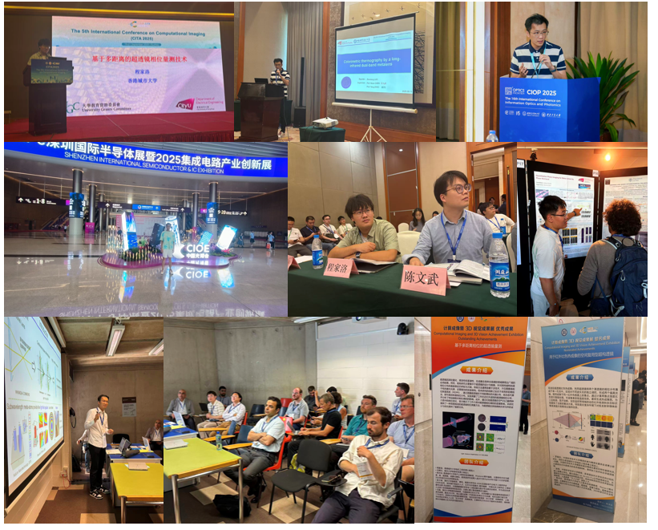
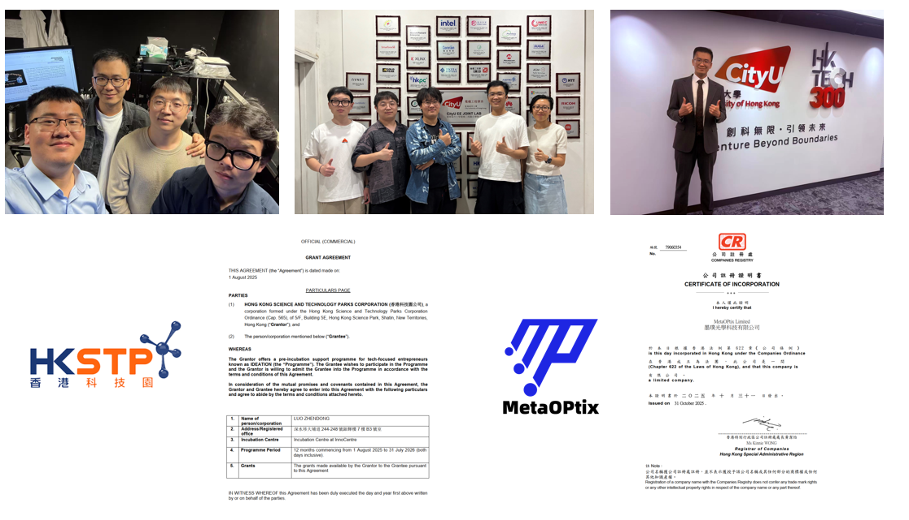
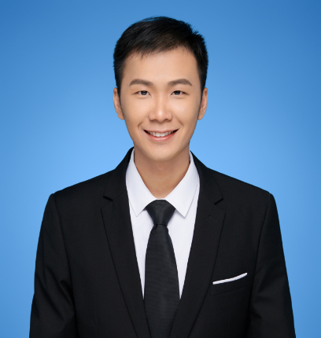
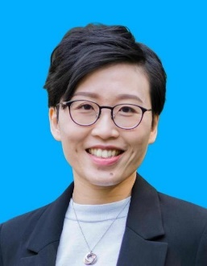
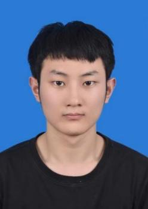
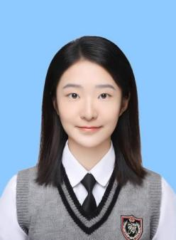
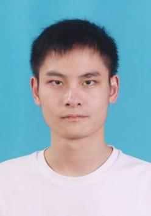
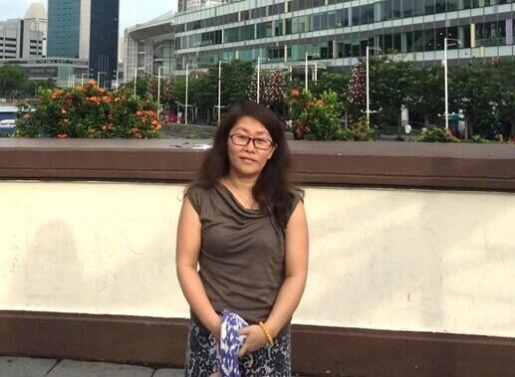

关于 MetaOptix
从超表面光学实验室到硬科技创业公司 — 致力于将前沿纳米光子学转化为可落地的产业价值
公司简介
MetaOptix Limited（墨璞光学科技有限公司）成立于 2025 年 10 月，是一家由 中国科学技术大学与香港城市大学联合培养博士生团队创立的硬科技企业。
公司专注于超表面光学芯片的设计与研发，核心产品 MeFace 是芯片级 3D 人脸识别模组。 以 Fabless 模式运营，为智能手机、AR/VR、AI 眼镜及 IoT 设备提供极致微型化、 高安全、低成本的 3D 感知解决方案。
已获得 HK Tech 300 种子基金与 HKSTP Ideation Programme 资助， 并与舜宇光学等产业链头部企业建立合作意向。
从实验室到原型验证



罗振东
创始人 & CEO
2017 年以中科大特殊招生 A 档资格进入中国科学技术大学，本科测控技术与仪器专业， 加入光机电英才班。2021 年保研留校，后入选 USTC-CityU 联合培养博士项目。
围绕超表面光学、微纳制造、红外光学器件方向，在 Advanced Science、 ACS Photonics 等顶级期刊发表多篇第一作者论文。 获博士研究生国家奖学金、蒋庄德院士传感器奖学金提名奖。
2025 年创立 MetaOptix Limited，统筹技术路线、团队组织、融资对接与产业合作， 推动超表面 3D 人脸识别技术从实验室走向产业化。



"光学设计 · 算法系统 · 商业治理" 能力闭环

程家洛
CityU 电机工程系博士生

Cynthia LAI
CityU 会计学系校友 · 欧洲高级管理会计师

周寅
CityU 电机工程系博士生

熊玉彬
CityU 电机工程系博士生

财务与商业分析
学术与产业智囊

张忠 教授
指导老师 · 中国科学技术大学
微纳米复合材料研究所，长期从事纳米功能材料与器件研究

陈侯潼 教授
指导老师 · 香港城市大学
电机工程系，微波与光子器件方向
双校联合 · 从基础研究到工程验证
🔬 中国科学技术大学
微纳米复合材料研究所 + 微纳研究与制造中心。ISO Class 5 洁净室，配备电子束蒸发、ICP 刻蚀、纳米压印、SEM/AFM 等全套微纳加工与表征设备。
🌍 香港城市大学
电机工程系实验室配备 Mask Aligner、Direct Laser Writer、Nano Imprint 等设备。HK Tech 300 创新创业孵化体系。


从实验室到产业化
科研启航
在超表面光学、纳米光子学与红外探测方向积累深厚科研成果。团队成员在 Advanced Science、ACS Photonics 等顶刊发表多篇论文，逐步形成将超表面技术应用于 3D 感知的构想。
协同攻关
从单点科研走向系统工程。光学设计、算法开发、微纳制造、商业分析多方向协同推进，完成核心原型验证、光学仿真与初步系统测试。
公司成立
MetaOptix Limited 在香港注册。获得 HK Tech 300 Seed Fund 与 HKSTP Ideation Programme 资助。
与舜宇光学等建立合作意向，获行业推荐信。
继续出发
推进封装方案优化、MVP 系统测试。争取将 LOI 升级为 MOU，推动试点集成与联合测试项目，加速从样机验证走向产业落地。
"让安全更小、更省、更强"
我们相信超表面光学技术将重塑 3D 感知的未来。 MetaOptix 将持续推动核心器件国产替代，将高安全 3D 识别从旗舰特权变为全民权利。